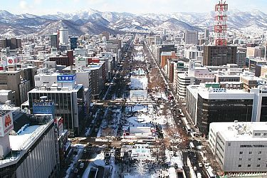

Hokkaido - Perto da Nautreza
A morada das fontes termais naturais! Popular por seus vulcões, fontes termais e áreas de esqui, esta linda ilha japonesa parece saída de um livro ilustrado. E é pelas suas diversas atrações e experiências que é um local impecável para passar férias com os seus filhos e outras pessoas importantes. Seja a beleza do Lago Azul ou do Zoológico, você ficará hipnotizado. É um dos lugares ideais para visitar no Japão durante o verão.